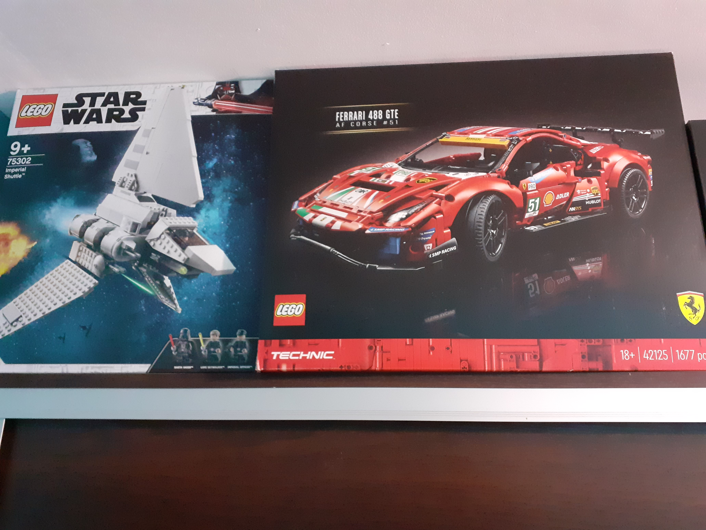
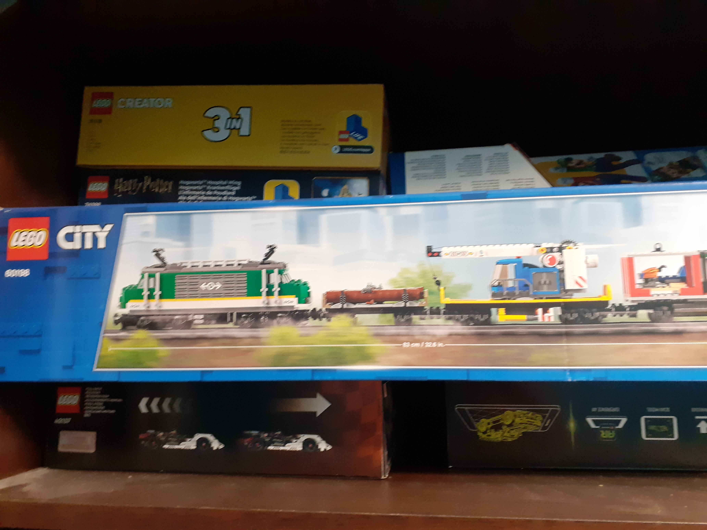
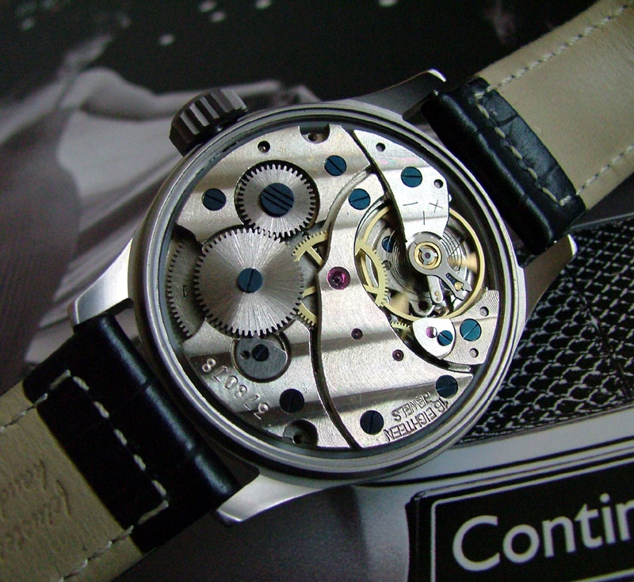
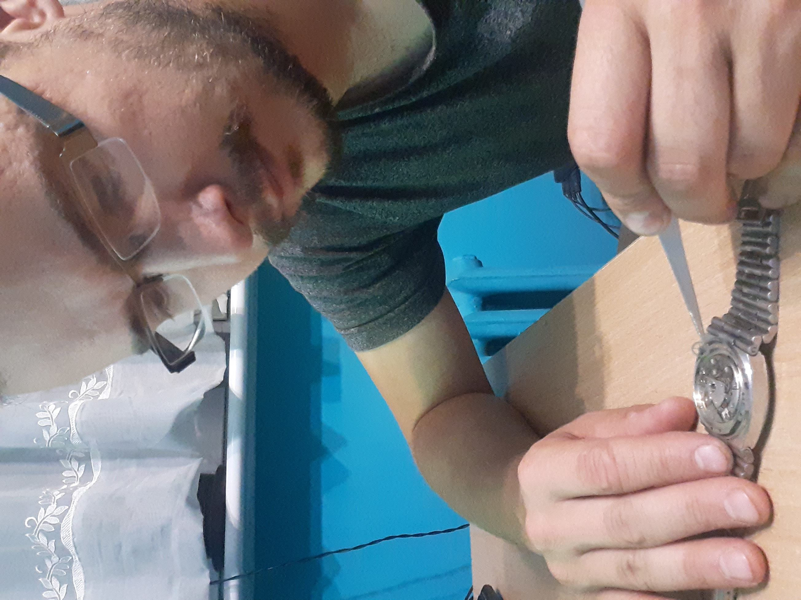
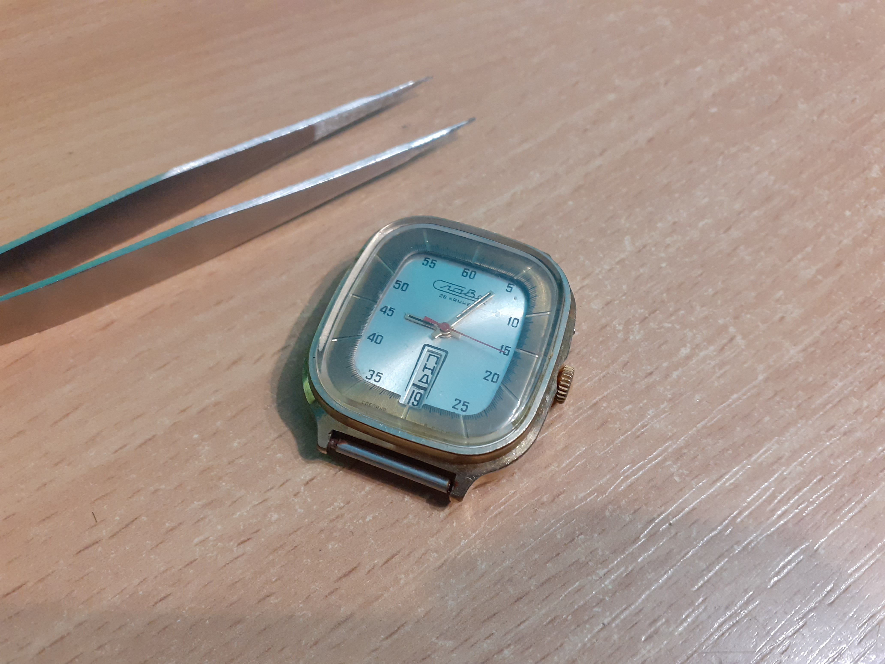

O mnie
Imię i nazwisko:
Grzegorz Jeżowski
Adres:
Sportowa 1/2
63-000 Środa Wlkp.
Numer telefonu:
+48 609 709 477
Adres @-mali:
g.jezowski@tlen.pl
Wykształcenie
Uniwerstytet Ekonomiczny w Poznaniu
Podyplomowe studia z rachunkowości
2010-2021
Uniwerstytet im. Adama Mickiewicza w Poznaniu
Matematyka, Matematyka finansowa
2005-2010
Doświadczenie zawodowe
Kontroler operacyjny
Homag Services Poland Sp. z o.o.
2022-obecnie
· Business Partner dla obszarów Purchasing, Dispositions, Strategic Chain Managment (SCM)
· Udział w zamknięciu miesiąca, kroki związane z zamknięciem produkcyjnym w programie SAP. Kontrola i sprawdzanie danych
· Udział w wdrożeniu projektów nowych produktów, wspradzie i współpraca z dzaiłami Industral Engeniering oraz R&D
· Raportowanie dla zarządu, analizy w programie Excel (Power Pivot i Query), zestawienia w programie Excel, prezentacje (Power Point i Thik-cell)
· Prowadzenie projektów optymalizacyjnych (wprowadzenie BOT do automatycznych kalkulacji)
· Kalkulacje kosztu produkcji masznyn i komponentów w SAP oraz w niektórych przypadkach również z wykorzystaniem programu Excel
Analityk operacyjny
Homag Services Poland Sp. z o.o.
2018-2022
· Udział w wdrożeniu projektów nowych produktów, wspradzie i współpraca z dzaiłami Industral Engeniering oraz R&D
· Raportowanie dla zarządu, analizy w programie Excel
· Kalkulacje kosztu produkcji masznyn i komponentów z wykorzystaniem programu Excel
Młodszy specjalista ds. controllingu
Homag Poland Sp. z o.o.
2016-2018
· Kalkulacje kosztu produkcji masznyn i komponentów z wykorzystaniem programu Excel
... więcej o moim doświadczeniu zawodowym
Link do strony Internetowej z większą ilością informacji o moim doświadczeniu zawodowym
Języki

Język angielski
średniozaawansowany (B2)

Język niemiecki
średni (B1)

HTML
podstawowy

CSS
podstawowy
Zainteresowania

Kolekcjonowanie klocków lego
Trendy ekologiczne są ważne, ale kiedy usłyszałem że LEGO zamierza skończyć z produkcją klocków z tworzyw sztucznych i przejść na trzcinę cukrową
postanowiłem zacząć zbierać klocki, aby zebrać trochę starych dobrych plastikowych zestawów. W taki sposób zacząłem kolekcjonować zestawy klocków LEGO, co przerodziło się w pewnego rodzaju hobby.
Zdjęcia:



Naprawianie zegarków mechanicznych
Jednym z moich zainteresowań jest naprawianie zegarków mechanicznych.
Wszystko zaczeło się kiedy kupiłem sobie pierwszy stary mechaniczny zegarek, a po około dwóch tygoniach złamałem w nim wskazówkę.
Ponieważ lokalni zegarmistrzowie nie byli w stanie naprawić uszkodzenia, postanowiłem poszukać na Internecie i znalazłem ogłoszenie w którym były wskazówki jakie potrzebuje oraz wiele innych części (łącznie około 10 kg)
Cena jaką sprzedający zażyczył sobie za samę wskazówki była tylko nieznacznie mniejsza od tego co chciał za wszystko, więc kupiłem wszystko. I tak się zaczeło.
Mając 10 kg części metodą prób i błędów (na początku było więcej błędów) nauczyłem się naprawiać zegarki i wiele z kupionych części złożyłem kilkanaście działających egzemplarzy.
Zdjęcia:

